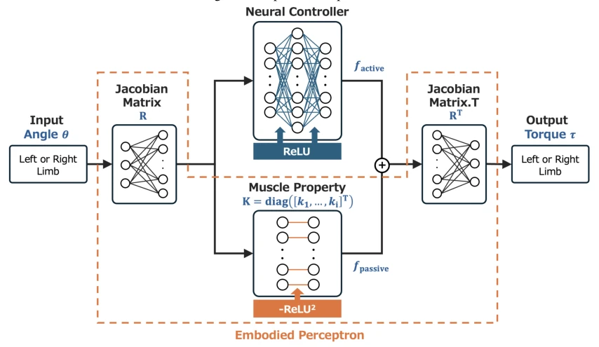
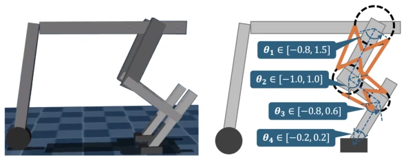
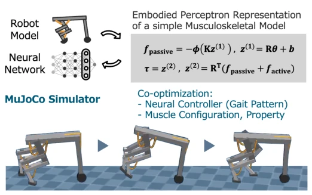
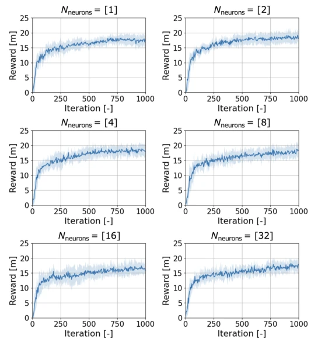
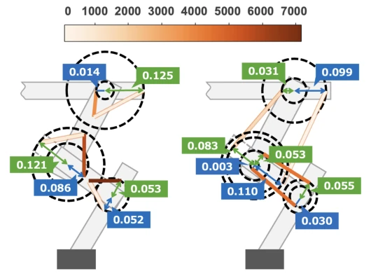
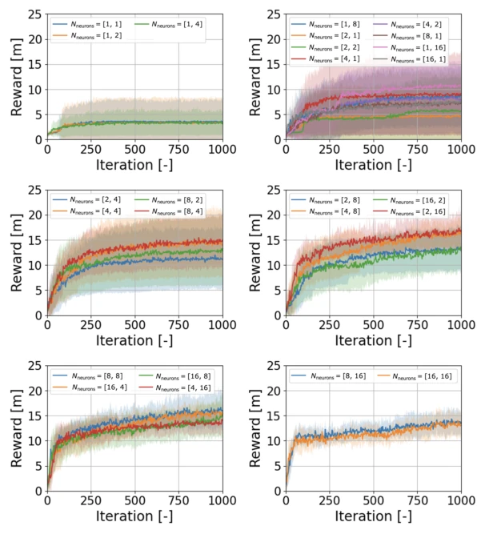

This paper treats the body as a sensor, physical parameters as weights, and nonlinearity as an activation function; the theory is quite elegant. Using CMA-ES to co-optimize muscle configuration and controller, the result shows a true neural controller only needs 1 neuron to walk, while traditional networks require 16. This indeed proves the potential of embodied intelligence of "body as computation", offloading computational pressure to physical structures. However, a critique is that CMA-ES optimization of muscle parameters is inefficient, and only walking tasks were run; how it handles complex tasks is unknown. Soft constraint optimization occasionally yields infeasible configurations, parameter tuning relies on guesswork. However, modeling the body as a neural network does provide a new perspective for embodied design, no longer relying entirely on expert intuition to guess blindly. This minimal architecture is common in biological systems, but counts as a bold attempt in the robotics field; although the theoretical framework is elegant, engineering implementation depends on whether the gap between simulation and reality can be bridged, after all, the physical world is much more complex than simulation.
Existing AI control strategies are strong, but robot bodies are often too simple, limiting environmental adaptability. Although embodied robotics research [1] indicates that well-designed bodies can replace part of control, it relies on expert intuition and lacks a systematic theoretical framework. Physical reservoir computing [3] and control theory [4] have explored body computational capabilities, but lack a unified framework to simultaneously optimize controllers and bodies. Existing methods such as reinforcement learning-based tendon-driven robots [5] or muscle arrangement based on human data [6] fail to treat hardware as part of the policy for end-to-end optimization [7]. This paper aims to fill this gap, unifying neural and physical systems through Embodied Perceptron, achieving joint optimization of body and control, reducing controller burden.
核心是 Embodied Perceptron 表示法，将肌肉系统映射为神经网络。前向传播中，关节角度输入，Jacobian 矩阵 R 对应权重，肌肉非线性弹性（ReLU2）对应激活函数，输出关节力矩。物理约束被显式建模为网络层。优化流程采用 CMA-ES 算法，同时搜索肌肉配置矩阵 R、属性矩阵 K 及神经控制器参数。奖励函数包含行走距离、能量消耗惩罚及权重正则化。机器人设计为前轮后腿混合形态，每腿 10 肌肉。通过等价变换处理 R 矩阵元素过大问题。身体网络（橙色区域）与控制器网络（顶部）共同构成系统，训练 R 和 K 使身体适应行走，同时优化控制器层获取运动策略。
The core is the Embodied Perceptron representation, mapping the muscle system to a neural network. In forward propagation, joint angles are input, Jacobian matrix R corresponds to weights, muscle nonlinear elasticity (ReLU2) corresponds to activation function, outputting joint torque. Physical constraints are explicitly modeled as network layers. The optimization process uses the CMA-ES algorithm, simultaneously searching for muscle configuration matrix R, attribute matrix K, and neural controller parameters. The reward function includes walking distance, energy consumption penalty, and weight regularization. The robot is designed as a front-wheel rear-leg hybrid morphology, with 10 muscles per leg. Equivalent transformation is used to handle the problem of R matrix elements being too large. The body network (orange region) and controller network (top) together constitute the system, training R and K to make the body adapt to walking, while optimizing the controller layer to obtain motion policies.

Figure 2: Overview of the system represented by the Embodied Perceptron. The orange dashed region indicates the physical muscle network, while the neural controller at the top represents the control policy network. In the orange dashed region, R denotes the muscle configuration, and K captures the muscle properties, including the nonlinear elasticity of each muscle.

Figure 3: Robot design in this study. Left: 3D model in MuJoCo simulation showing the corresponding physical implementation of the design. Right: Schematic illustration of the leg mechanism, highlighting the joint configuration and muscle-inspired actuator layout (orange lines).
Walking tasks were tested in MuJoCo simulation, success standard is 15 meters in 5000 steps. The comparison baseline is a traditional two-layer feedforward neural network. Results show that under the optimized body structure, the controller only needs 1-2 neurons to walk stably, while traditional networks require more than 16 neurons to achieve equivalent performance. Ablation experiments show that increasing the number of neurons (>16) actually slightly lowers learning efficiency. This validates that body design can significantly reduce controller representation burden. However, experiments are only for specific walking tasks, and the optimization process relies on CMA-ES, with high computational cost. Result figures show that after muscle configuration optimization, a specific elastic distribution appears, supporting the theoretical hypothesis.

Figure 1: Experimental procedure.

Figure 4: Impact of neural controller size on gait pattern. Network structure denoted as Nneurons = [n1, n2, ...] indicates the number of neurons per layer.

Figure 5: Optimized robot design obtained using the proposed method. Left: mono-articular muscle configuration; right: bi-articular muscle configuration. Muscles are shown in orange, with color intensity corresponding to their elasticity values (darker colors indicate higher elasticity).

Figure 7: Impact of neural controller size in the controller-only network on gait pattern. Network structure denoted as Nneurons = [n1, n2, ...] shows the number of neurons per layer.